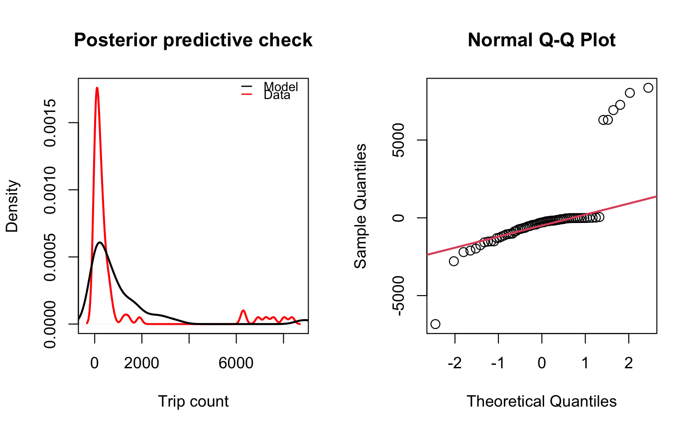
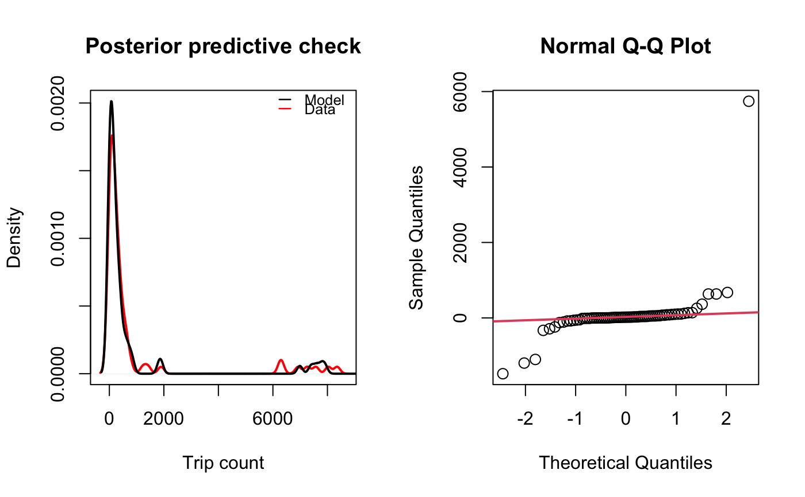

Check goodness of fit of a mobility model
check_mobility.RdThis function takes a fitted mobility model and calculates goodness of fit metrics. Model objects produced by the
fit_prob_travel, fit_gravity, fit_mobility or summarize_mobility
functions are accepted. If the Deviance Information Criterin (DIC) was calculated in the supplied model object, it is included in output.
When plot_check = TRUE, two plots are shown containing the posterior distribution of trip counts compared to observed data
and a Normal Q-Q plot showing the quantiles of model residuals against those
expected from a Normal distribution. Goodness of fit metrics include:
check_mobility(M, D = NULL, N = NULL, mod, plot_check = TRUE)
Arguments
| M | named matrix of trip counts among all \(ij\) location pairs |
|---|---|
| D | named matrix of distances among all \(ij\) location pairs |
| N | named vector of population sizes for all locations |
| mod | model output from either the |
| plot_check | logical indicating whether to plot the Posterior Predictive Check and Normal Q-Q Plot (default = |
Value
a list of goodness of fit measures
See also
Other model:
fit_gravity(),
fit_jags(),
fit_mobility(),
fit_prob_travel(),
summarize_mobility()
Examples
M <- mobility_matrices$M D <- mobility_matrices$D N <- mobility_matrices$N total <- rowSums(M, na.rm=TRUE) mod_travel <- summarize_mobility( fit_prob_travel(total-diag(M), total) )#>#>#> Compiling model graph #> Resolving undeclared variables #> Allocating nodes #> Graph information: #> Observed stochastic nodes: 6 #> Unobserved stochastic nodes: 9 #> Total graph size: 23 #> #> Initializing model #> #> NOTE: Stopping adaptation #> #>#>#>#> Compiling model graph #> Resolving undeclared variables #> Allocating nodes #> Graph information: #> Observed stochastic nodes: 74 #> Unobserved stochastic nodes: 30 #> Total graph size: 1166 #> #> Initializing model #> #> NOTE: Stopping adaptation #> #>#>#>#>#> Compiling model graph #> Resolving undeclared variables #> Allocating nodes #> Graph information: #> Observed stochastic nodes: 6 #> Unobserved stochastic nodes: 9 #> Total graph size: 23 #> #> Initializing model #> #> NOTE: Stopping adaptation #> #>#>#>#>#>#> Compiling model graph #> Resolving undeclared variables #> Allocating nodes #> Graph information: #> Observed stochastic nodes: 74 #> Unobserved stochastic nodes: 30 #> Total graph size: 1166 #> #> Initializing model #> #> NOTE: Stopping adaptation #> #>#>check_mobility(M=M, mod=mod_travel)#> $MAPE #> [1] 0.002851707 #> #> $R2 #> [1] 0.9999997 #>check_mobility(M=M, D=D, N=N, mod=mod_gravity)#> $RMSE #> [1] 2157.004 #> #> $MAPE #> [1] 2.595243 #> #> $R2 #> [1] 0.5087096 #>check_mobility(M=M, D=D, N=N, mod=mod_mobility)#> $RMSE #> [1] 448.5383 #> #> $MAPE #> [1] 0.3866179 #> #> $R2 #> [1] 0.967672 #>